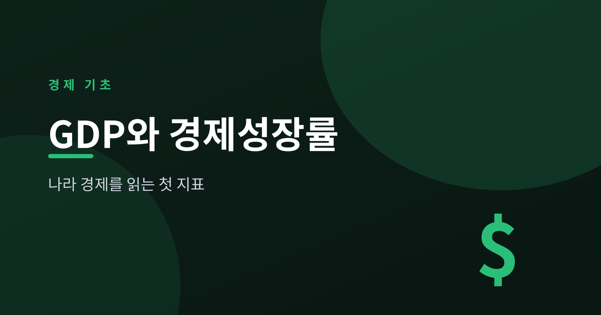
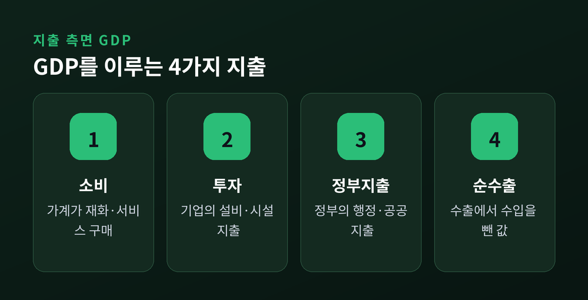
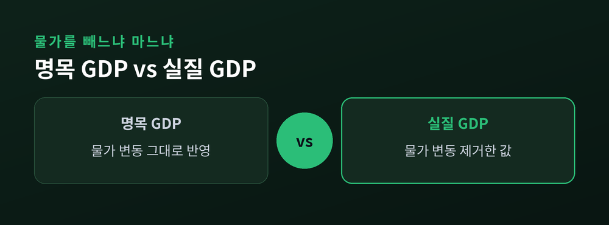
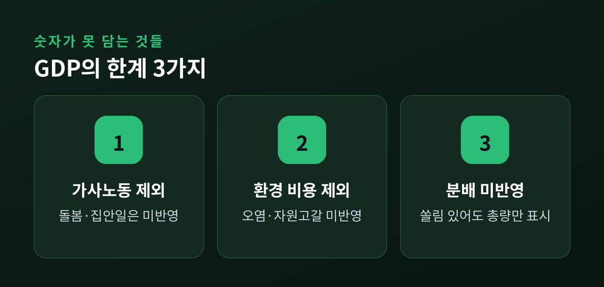

나라 경제를 읽는 첫 지표

GDP(국내총생산)는 일정 기간 한 나라 안에서 새로 만들어진 재화와 서비스의 시장가치를 모두 더한 값입니다. 한 나라의 경제를 커다란 그릇으로 본다면, 그 그릇 안에서 한 해 동안 만들어진 물건과 서비스의 가치를 전부 합친 숫자라고 생각하면 쉽습니다.
여기서 중요한 조건이 두 가지 있습니다. 하나는 최종 재화만 센다는 점입니다. 빵을 만들 때 쓰인 밀가루값은 따로 세지 않고, 완성된 빵의 가격만 셉니다. 중간 단계를 다 더하면 같은 가치를 여러 번 세는 셈이 되기 때문입니다. 다른 하나는 한 나라 안에서 생산된 것만 포함한다는 점입니다. 국적과 상관없이 그 나라 영토 안에서 이루어진 생산 활동이 기준이 됩니다.

GDP를 바라보는 방법 중 가장 널리 쓰이는 것이 지출 측면 접근입니다. 한 나라에서 만들어진 것은 결국 누군가에 의해 소비되거나 쓰이기 때문에, 돈이 쓰인 곳을 다 더해도 같은 값이 나옵니다.
지출은 크게 네 갈래로 나뉩니다. 가계가 물건과 서비스를 사는 소비, 기업이 공장이나 설비에 돈을 쓰는 투자, 정부가 도로나 행정 서비스에 쓰는 정부지출, 그리고 해외에 판 것에서 해외에서 사온 것을 뺀 순수출입니다. 이 네 가지를 더하면 그 나라의 GDP가 됩니다. 마치 가계부에서 어디에 얼마를 썼는지 항목별로 더해 총지출을 구하는 것과 비슷합니다.

같은 양의 빵을 만들었는데 빵값이 올랐다면 GDP 숫자도 커집니다. 이렇게 물가 변동을 그대로 반영한 값이 명목 GDP입니다. 겉으로 보이는 금액 그대로를 계산한 것이라 이해하면 됩니다.
문제는 명목 GDP만 보면 실제로 더 많이 생산한 것인지, 아니면 단순히 물가가 올라서 숫자가 커진 것인지 구분하기 어렵다는 점입니다. 그래서 물가 변동을 제거하고 순수하게 생산량의 변화만 보여주는 값을 따로 계산하는데, 이것이 실질 GDP입니다. 실질 GDP는 기준이 되는 시점의 가격으로 다시 계산해, 물가라는 안경을 벗고 생산량 자체의 크기를 보는 셈입니다.
경제성장률은 바로 이 실질 GDP가 전년보다 얼마나 늘었는지를 백분율로 나타낸 것입니다. 물가 상승 효과를 뺀 순수한 생산 증가만 보여주기 때문에, 한 나라 경제가 실제로 얼마나 커지고 있는지를 판단하는 핵심 지표로 쓰입니다.

나라 간 생활 수준을 비교할 때는 GDP를 인구수로 나눈 1인당 GDP를 많이 씁니다. 나라 전체 GDP가 크더라도 인구가 훨씬 많다면 개인이 누리는 몫은 작을 수 있기 때문입니다. 케이크 하나가 아무리 커도 나눠 먹는 사람이 많으면 한 사람 몫은 작아지는 것과 같은 이치입니다.
다만 GDP는 만능 지표가 아닙니다. 집안일이나 돌봄처럼 시장에서 거래되지 않는 노동은 포함되지 않고, 환경 오염이나 자원 고갈 같은 비용도 반영하지 않습니다. 또한 GDP가 커져도 그 몫이 소수에게 쏠려 있다면 대다수의 삶은 크게 나아지지 않을 수 있습니다. 즉 GDP는 경제 활동의 규모를 보여줄 뿐, 삶의 질이나 행복까지 담아내는 지표는 아닙니다. 나라 경제를 읽는 첫걸음으로는 유용하지만, 그 나라 국민이 실제로 얼마나 잘 살고 있는지는 다른 지표들과 함께 살펴봐야 합니다.